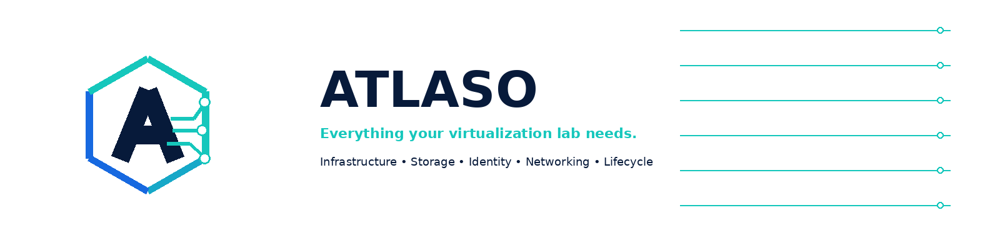
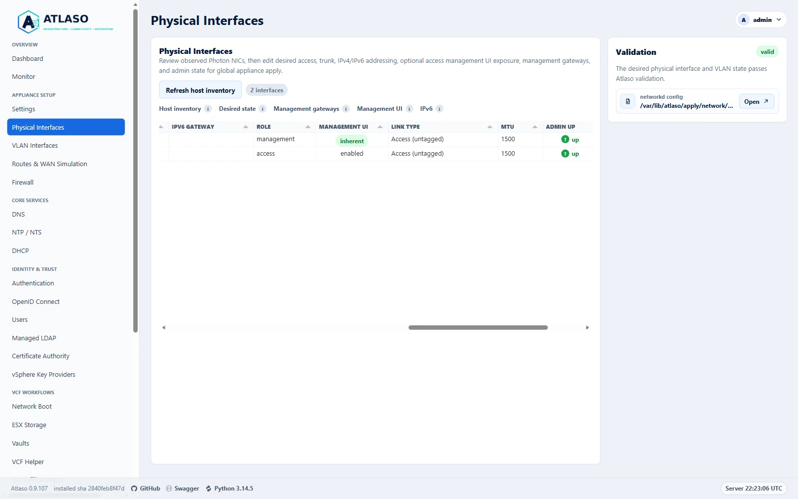
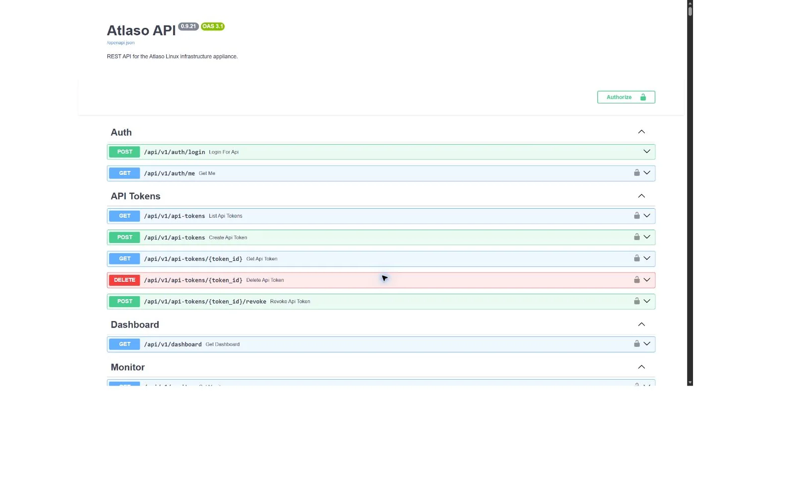
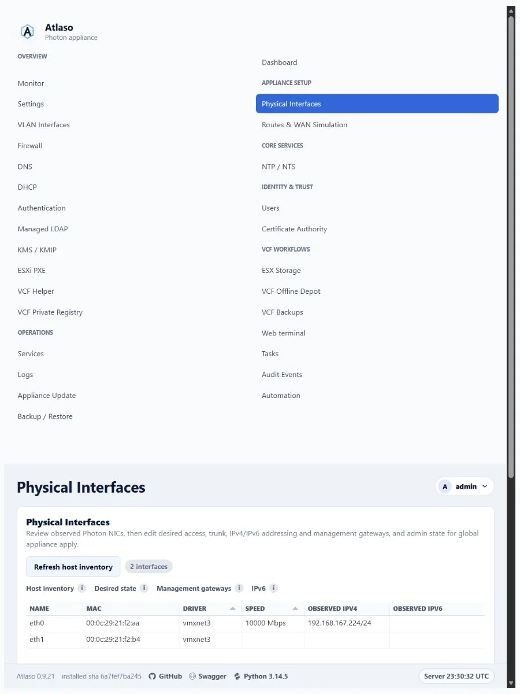
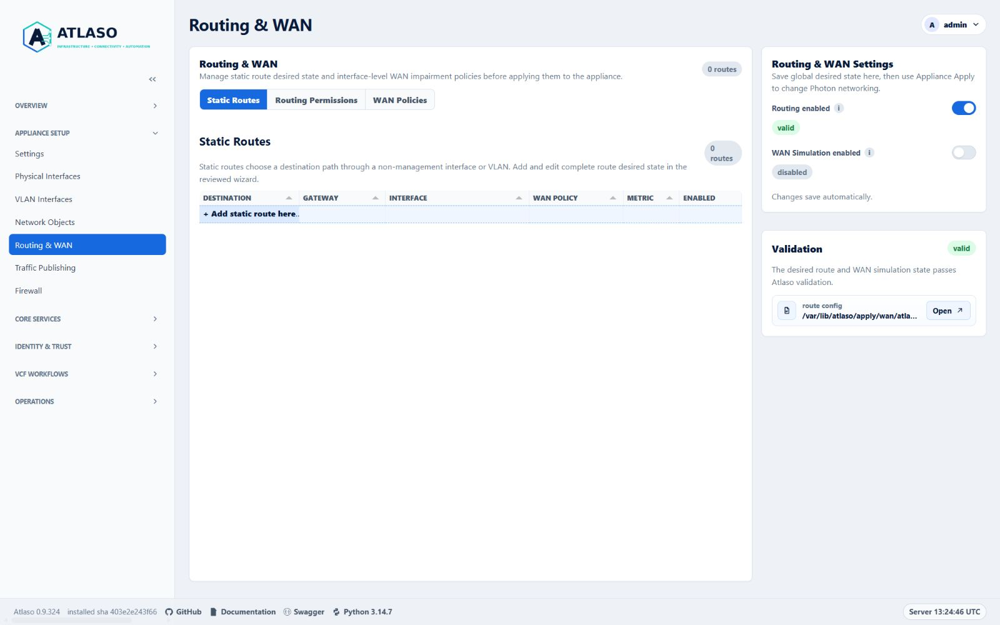
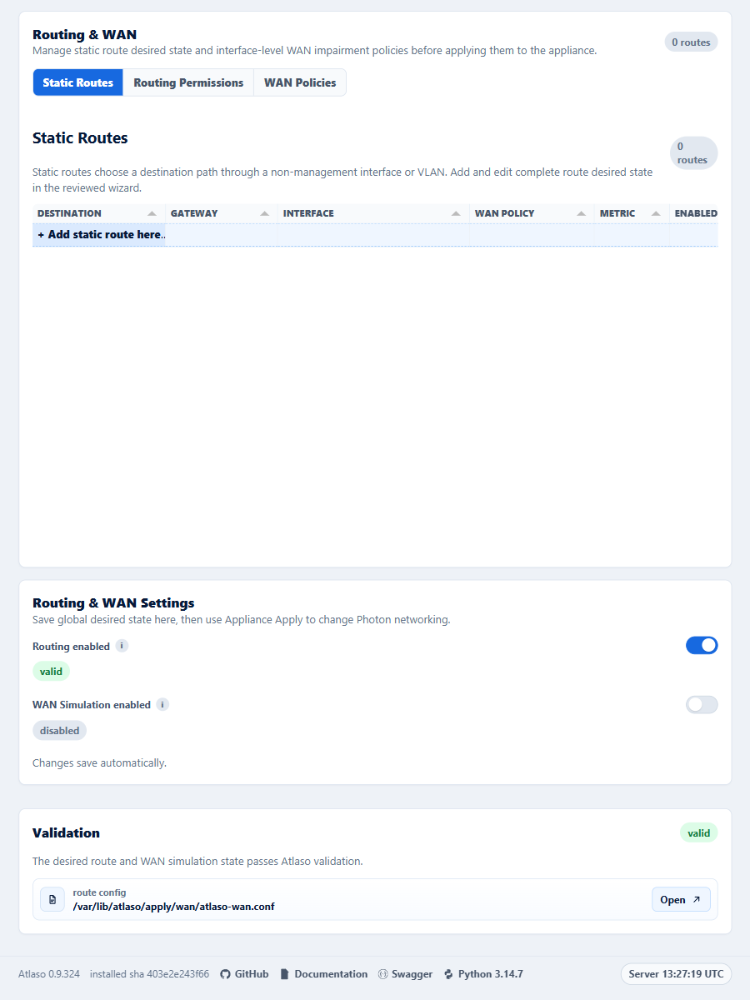
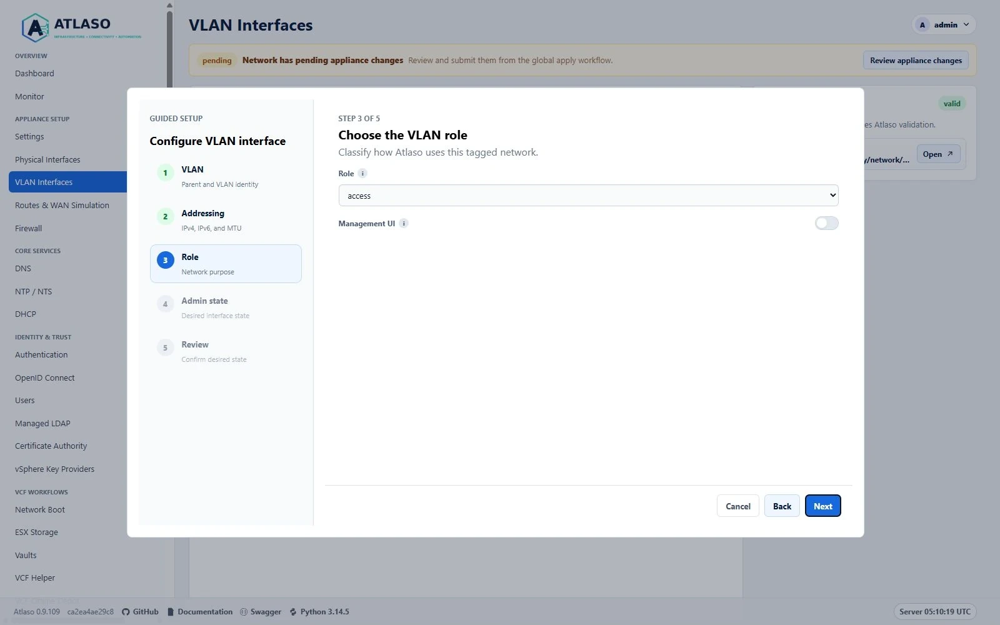
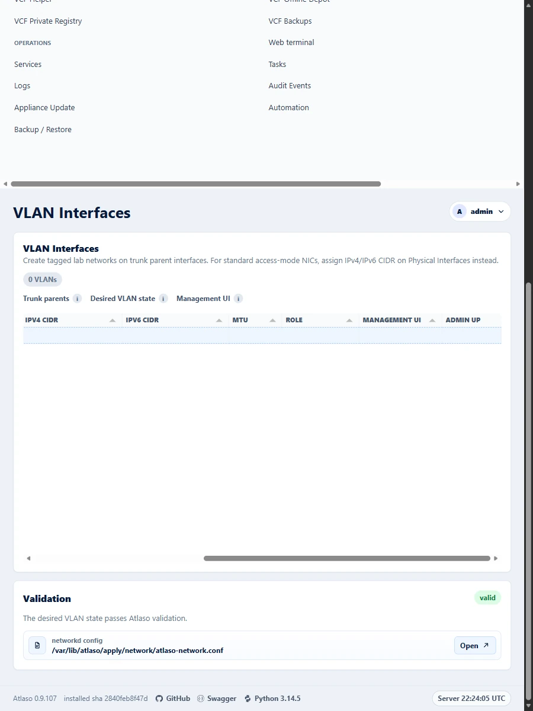

Full technical reference¶

Interface overview¶
This verified appliance view provides visual orientation before you begin.

Figure: Physical Interfaces in the verified clean-appliance desktop state.
Everything your virtualization lab needs.
Infrastructure • Storage • Identity • Networking • Lifecycle
Atlaso is a Linux-based, web-managed infrastructure appliance for homelabs, VMware Cloud Foundation labs, POCs, training environments, isolated network labs, and WAN simulation testing. Atlaso supports POC, lab, and test environments by simplifying deployment, maintenance, and validation.
Its product pillars are Infrastructure • Connectivity • Automation.
Fresh appliances use core.atlaso.internal as the management identity and atlaso.internal as the default managed DNS
zone. Service names include ca.atlaso.internal, kms.atlaso.internal, and depot.atlaso.internal. Future clustered
deployments are expected to use core-01, core-02, and core-vip; clustering is not implemented in 0.9.18.
Atlaso 0.9.18 is a clean break. Existing appliances from the retired product must be redeployed; Atlaso provides no data, configuration, certificate, or update-channel migration.
Community and licensing¶
Contributions follow the contributing guide,
Code of Conduct, and
Security Policy. Atlaso authored code is available under the
MIT License. Each released appliance includes an automatically
generated /usr/share/doc/atlaso/THIRD_PARTY_NOTICES.md inventory for every shipped Python package, Photon RPM, and
bundled component; the same release-specific notice file is published with the signed release assets. Third-party
software retains its own license terms, including the bundled iPXE bootloaders.
The MVP is a safe runnable scaffold. It provides the FastAPI control plane, appliance-style web UI, local authentication, JWT bearer API tokens, audit logging, OpenAPI 3.1, dry-run system adapters, and Windows/Hyper-V script scaffolding. It does not apply real host networking, firewall, service, SFTP, registry, repository, DNS, DHCP, CA, or KMS changes by default.
Photon OS Appliance Image¶
The first real OS appliance target is Photon OS 5.0 on Hyper-V. The image builder lives in
image/hyperv/ and provisions:
- a Photon OS 5.0 Generation 2 Hyper-V VM with Secure Boot off;
- updated Photon packages from the configured Photon 5.0 repositories, with a second update pass after appliance packages are installed;
- the
atlasosystem user; /opt/atlasofor the installed application;/etc/atlaso/atlaso.envfor appliance environment settings;/etc/atlaso/build-infofor build/update provenance;- masked
systemd-ssh-generatorso Photon does not attempt automatic SSH-over-AF_VSOCK sockets on Hyper-V while normal TCP SSH remains available; /var/lib/atlasofor durable state;/var/log/atlasofor local logs;- fixed appliance mount points under
/mnt/atlaso-vcf-*; - operator-approved ESX Storage ext4 mounts under
/mnt/atlaso-esx-storage, with Photonnfs-utilsandrpcbindinstalled but disabled until global apply; atlaso.servicerunning uvicorn from a Python virtual environment;- nginx enabled as the default management front door, with deployed-VM first boot generating the integrated root CA and
appliance:httpscertificate, redirecting HTTP/80 to CA-backed HTTPS/443, and proxying HTTPS/443 to uvicorn on127.0.0.1:8000; atlaso-firewall.serviceloading the appliance nftables firewall;- a Atlaso recovery console on tty1 with authenticated configuration and power menus,
top, and an authenticated/audited root Bash handoff, while tty2 and later terminals retain normal Photon login prompts; and /opt/atlaso/bin/atlaso-helperand a constrained sudoers template.
Finished Hyper-V appliance VMs and VMware OVF/OVA appliances also attach two durable expandable data disks: one for the
VCF Offline Depot at /mnt/atlaso-vcf-offline-depot and one for VCF Backups at /mnt/atlaso-vcf-backups. Keep those
workloads off the OS disk. On first boot, atlaso-data-disks.service labels blank attached data disks as ATLASO_DEPOT
and ATLASO_BKUP, formats them as ext4, persists them in /etc/fstab, and mounts them at those fixed paths before
atlaso.service starts.
Atlaso writes operational events to /var/log/atlaso/atlaso.log. Audit events, desired-state edits, and appliance apply
submissions are mirrored there with sensitive values redacted. The Settings page controls local file verbosity and can
also forward the same operational events to an external syslog receiver.
For logging and audit purposes, IP addresses, MAC addresses, hostnames, and account names are non-sensitive operational identifiers when they appear by themselves. Passwords, tokens, authenticated URLs, session material, private keys, password hashes, credential verifiers, and other secret-bearing data remain sensitive. Content-integrity hashes of non-secret material and one-way change-detection hashes of encrypted-at-rest ciphertext do not. An identifier is sensitive when embedded in or paired with authentication or cryptographic material. This classification does not relax access controls or site handling policy.
The Monitor page is an operator-facing, read-only runtime view for appliance resource health. It charts thick
appliance totals alongside thin per-logical-CPU, per-interface RX/TX, and unique-device disk activity over the last one,
three, or six hours, plus memory pressure and compact per-interface and virtual-machine context. Disk Activity retains a
deduplicated per-device read/write table; all per-mount capacity presentation, including the top-level Disks metric,
Disk Usage chart, and capacity table, is intentionally omitted. Disk activity totals count each underlying device once
even when several mount rows share it. Each chart can be expanded into a near-full-screen view without changing its
active time range; only that expanded view exposes editable percentage zoom and drag-to-select time-window zoom.
Hovering near a sampled point or line segment emphasizes the associated series, legend entry, and exact sample; clicking
the chart or a legend item pins that series until it is cleared or another series is selected. The 1h, 3h, 6h, 12h, and
24h history selectors use the same sampled data. The sampler records one row about every 30 seconds and keeps the
24-hour window plus a small buffer. Collection uses Linux /proc, /sys, filesystem usage, DMI data,
systemd-detect-virt, and vmtoolsd when present; it does not call privileged helpers or mutate host services. Set
ATLASO_MONITOR_ENABLED=false to disable both the background sampler and request-time collection from /monitor/data
or /api/v1/monitor. When disabled, Atlaso may read existing monitor rows but it does not probe the host or create new
monitor_samples rows. See Monitor hierarchy and interaction design QA for
the current hierarchy, interaction behavior, responsive expectations, and the history of the removed Disk Usage panel.
The authenticated /dashboard page is the compact operations command center. Its server-rendered snapshot shows overall
appliance state, setup readiness, actionable exceptions, valid pending changes, active tasks, enabled service health,
the management network path, and a six-entry task/audit activity feed. Invalid changed apply units, recent failed tasks,
unhealthy enabled services, and missing or unexpectedly down configured interfaces are prioritized in that order.
Disabled optional services and unused interfaces remain quiet. The page refreshes from the session-authenticated
/dashboard/data UI endpoint every 30 seconds while visible, retains the last successful snapshot on failure, and marks
retained data stale. This private UI endpoint does not replace or change the bearer-authenticated /api/v1/dashboard
contract. Dashboard actions are links into existing workflows; the page does not apply configuration, restart services,
or mutate the appliance.
Photon OS 5.0 GA shipped with Python 3.11, but the current Photon 5.0 updates stream has moved beyond that baseline. On
June 21, 2026, live repository metadata showed python3 as 3.14.5-2.ph5. Atlaso targets Python 3.14 only
(requires-python >=3.14,<3.15); verify the appliance stream with:
Build inputs are the current Photon OS 5.0 ISO URL and checksum. On Hyper-V, use the Windows wrapper so the Photon kickstart is attached as a local single remastered ISO instead of depending on early installer networking:
powershell.exe -ExecutionPolicy Bypass `
-File scripts/windows/hyperv/build-photon-image.ps1 `
-IsoUrl "https://packages.broadcom.com/photon/5.0/GA/iso/photon-5.0-dde71ec57.x86_64.iso" `
-IsoChecksum "sha512:6a7a258399a258da742032987c043ab25503698d35edafaf1ae000f12127da1a161d8b84caa17fd8f23d129e81e1faa7ab087c20ab9229772a643f8f9475305f" `
-SshPassword "<one-time-build-root-password>" `
-BootstrapAdminPassword "<initial-atlaso-admin-password>"
Run Packer from an elevated PowerShell session or as a user in the Hyper-V Administrators group. Prepare the Atlaso
Hyper-V management network before building:
The Packer build VM uses the Atlaso-Mgmt switch by default with temporary static address 192.168.49.30/24 and
gateway 192.168.49.254. This avoids fragile Default Switch host-IP detection while still giving the builder NAT
internet access for tdnf update. Unless -BuilderStaticDns is supplied, the wrapper discovers the host's active IPv4
DNS servers and uses them for both the temporary Photon builder and the finished appliance management interface, with
public DNS only as a fallback. The wrapper writes photon-ks.json, embeds it into a remastered Photon ISO, replaces the
ISO's UEFI GRUB config with a Atlaso auto-install entry, and passes that single ISO to Packer. Photon then boots with
ks=cdrom:/photon-ks.json without Packer typing boot commands. Raw packer build . is intentionally blocked unless the
ISO is marked as wrapper-prepared; the wrapper is the tested Windows Server 2025 path. Build runs pass Packer's -force
flag by default so the fixed output directory can be rebuilt in one command. Use -OutputDirectory <path> to keep
multiple artifacts or -KeepExistingOutput when you want Packer to fail instead of replacing an existing output
directory. Use -PackerOnError abort to keep a failed builder VM for debugging, or -PackerOnError ask to choose the
failure action interactively. During provisioning, the shared Photon path reads [project].version from the staged
pyproject.toml with Python's TOML parser and validates the repository's strict X.Y.Z release format before creating
the bootstrap release directory. Missing, unreadable, malformed, or invalid version metadata fails the build with the
specific version-policy error instead of an ambiguous shell match failure. Both Photon Packer targets stage
requirements-appliance.lock with the application source so bootstrap dependency installation can retain
--require-hashes; a missing staged lock fails the image rather than falling back to unpinned dependencies. They also
stage the third-party notice generator and its vendored-component inventory so the image can generate the required
Python, Photon RPM, and bundled-component notice at build time. Installed Python inventory reads only top-level
virtual-environment distributions; package-internal vendored metadata is not treated as a separately installed locked
dependency. Long TDNF operations capture their raw transaction output and emit one compact Packer status line every 30
seconds with elapsed time and cache size. Successful operations report their duration; failures preserve the TDNF exit
status and replay a normalized, bounded output tail. This avoids progress redraws appearing as hundreds of empty
Packer-prefixed lines without hiding actionable failures.
The image builder does not configure a custom pip package index by default. If your build network requires an internal
PyPI mirror, pass -PipGlobalIndex or -PipGlobalIndexUrl to set Photon site-level pip configuration before the Atlaso
virtual environment is created. The provisioner does not upgrade pip as a separate bootstrap step; it uses the
Photon-packaged pip to install Atlaso so a transient public PyPI pip release download cannot fail the image before the
application install starts. Leave both options empty to keep standard pip behavior:
powershell.exe -ExecutionPolicy Bypass `
-File scripts/windows/hyperv/build-photon-image.ps1 `
-IsoUrl "<photon-5.0-iso-url>" `
-IsoChecksum "<packer-checksum>" `
-PipGlobalIndex "https://packages.vcfd.broadcom.net/artifactory/api/pypi/upstream-pypi-virtual/pypi" `
-PipGlobalIndexUrl "https://packages.vcfd.broadcom.net/artifactory/api/pypi/upstream-pypi-virtual/simple"
The generated appliance intentionally keeps ATLASO_DRY_RUN_SYSTEM_ADAPTERS=true. Real host mutation is staged per
apply unit after the helper-backed command path is reviewed. Build disposable demo or lifecycle images with
-EnableRealSystemAdapters when the VM should actually mutate Photon services through the reviewed helper paths.
Firewall desired state is nftables-backed. The image installs nftables and boots with management access to SSH, HTTPS,
and the Atlaso web UI.
Appliance Update is a separate runtime-maintenance workflow from global /appliance-apply. Repository-style sources
cover Photon/tdnf, PowerShell Gallery or internal PowerShell repositories, and signed Atlaso release channels; the
retired Python Libraries and independent wheel streams are not available. Update work is queued to
atlaso-worker.service; the same worker runs Automation schedules, managed scripts, and VCF Offline Depot downloads.
Repository creation uses the shared guided workflow to capture identity, endpoint and trust policy, desired state, and
review before saving. Runtime package-client configuration still changes only through the explicit repository
synchronization task.
Successful main CI publishes immutable signed release bundles to GitHub Releases and advances the signed development
pointer on GitHub Pages. The Pages root provides a static release-repository landing page, while appliances use the
signed machine-readable documents under /updates. preview and stable promotions reuse an existing verified
release. GitHub Release descriptions preserve the exact signed source commit and append generated notes grouped from
merged pull-request labels, contributors, and comparison metadata. A protected manual publication dispatch can recover
an exact commit only when it already has a successful main push CI run. Publication refuses any existing tag or
release whose commit or asset bytes differ. The same dispatch safely retries channel advancement after a release has
already published because it verifies the existing asset bytes first. The guarded backfill command updates only
provenance-only legacy descriptions, preflights the complete selected range, and verifies that release identity and
assets remain unchanged after each body edit. See Appliance Update and
Automation.
The exported Hyper-V appliance resets to 192.168.49.1/24 on Atlaso-Mgmt; the Windows host side should be
192.168.49.254/24. scripts/windows/hyperv/create-switches.ps1 configures that address and a NAT for the management
network so Photon package checks work when the host has internet access.
Development¶
Primary workflow:
- Develop inside WSL2 on Windows 11.
- Run unit and API tests in WSL2.
- Build the Photon OS Hyper-V appliance image with Packer.
- Test the appliance in Hyper-V with PowerShell automation.
UI work must follow the mandatory Atlaso UI Design Guide. Classify each affected interaction as direct-edit Tabulator, wizard-backed Tabulator, read-only Tabulator, non-grid settings, or approval-only custom/other. Reuse the guide's named reference instead of creating a page-specific grid or interaction; custom/other must cite maintainer approval and the closest related reference. Existing-surface remediation is tracked in GitHub issue #115.
Install and run:
python3.14 -m venv .venv
source .venv/bin/activate
pip install -e ".[dev]"
uvicorn atlaso.app.main:app --reload --host 127.0.0.1 --port 8000
Run the repository syntax/content checks before committing broad UI, template, or documentation changes:
Install the local pre-commit hook to run the same checks automatically against changed Python, Jinja/HTML, Markdown, CSS, JavaScript, JSON, TOML, YAML, PowerShell, and SVG files:
The checker is intentionally syntax-first: Python AST parsing, Jinja template parsing, node --check for JavaScript,
structural CSS balancing, JSON/TOML parsing, Markdown fence/local-link checks, SVG XML parsing, UTF-8 validation, and
unresolved merge-conflict marker detection. It skips vendored static assets, bundled third-party payloads, build output,
and test-result artifacts.
Pull requests and versions¶
main is protected and accepts squash merges only after the version policy, repository checks, and complete pytest
suite pass. Each pull request carries one SemVer patch increment. The trusted Version bump workflow updates the Python
project version, Python runtime fallback, and PowerShell module version together on branches in this repository. Fork
pull requests must run the same command before they can pass the required version check:
For a local version update, python scripts/version.py bump increments the current patch version by one. Pass the
current version for an idempotent no-op or the exact next patch when the intended version is already known. For example,
when the current version is 2.4.6:
On Windows, the PowerShell wrapper provides the same two operations:
Do not edit only one version source. python scripts/version.py check verifies that all three sources agree; when
--base-root is supplied, it also requires the pull request to be exactly one patch above its base. --version and
--base-root are mutually exclusive, and an explicit target cannot skip a patch or change the major or minor version.
Updating an older pull request from main lets the workflow recalculate the next unused patch version.
Repository auto-merge remains an explicit maintainer choice per pull request. A main push runs
update-auto-merge-prs.yml, which uses GitHub's update-branch API only for open, same-repository, non-draft pull requests
that have auto-merge enabled and report BEHIND. Each request includes the observed head SHA, so a concurrent contributor
push causes GitHub to reject the stale update instead of merging over it. Forks, conflicted branches, and pull requests
without auto-merge are never updated by this workflow.
An internal branch update performed with GITHUB_TOKEN also creates a pull_request CI run that GitHub holds for
approval. Those approval-gated jobs have diagnostic names and are not required contexts. The version workflow's trusted
workflow_dispatch run uses the canonical Version policy, Repository checks, and Python tests names enforced by
the main ruleset. This preserves required validation without a personal access token or automatic approval of
untrusted workflow code. Because a token-authenticated update does not trigger pull_request_target, the updater waits
for GitHub's new head SHA and sends a typed repository dispatch. GitHub loads that handler from protected main; it
re-fetches the PR and verifies that it remains open, same-repository, based on main, and at the expected head before
checking out or pushing. The privileged updater has no manual-dispatch trigger.
The application update build continues to append +g<commit> metadata to wheel versions. A merged pull request does not
create a Git tag, GitHub release, or changelog entry; those remain deliberate release-management actions.
Run from Windows PowerShell using the WSL development virtualenv:
wsl -e sh -lc "cd /mnt/c/Users/m_dan/Documents/Atlaso && /home/m_dan/.venvs/atlaso/bin/python -m uvicorn atlaso.app.main:app --host 127.0.0.1 --port 8000"
Run in the background from Windows PowerShell:
wsl -e sh -lc "cd /mnt/c/Users/m_dan/Documents/Atlaso && setsid -f /home/m_dan/.venvs/atlaso/bin/python -m uvicorn atlaso.app.main:app --host 127.0.0.1 --port 8000 >/tmp/atlaso-uvicorn.log 2>&1"
View the background server log:
Stop the background server:
Development URL:
Bootstrap local login:
For a real appliance image, pass -var "bootstrap_admin_password=<initial-atlaso-admin-password>" to Packer. This
credential is independent from the build-time ssh_password. On Photon appliances, the bootstrap admin also exists as a
password-backed sudo OS account for local recovery and debugging.
Default local VCF backup SFTP user:
username: vcf-backup
status: disabled until VCF Backups is enabled and Local Users apply creates the Photon OS account
Set/reset this account from Users, then apply Local Users before exposing the SFTP endpoint beyond a development lab.
Vaults¶
Vaults at /vaults store only VCF and ESX passwords. Entries contain a lowercase dotted key, description, optional
username, encrypted password, and up to nine credential-free HTTP, HTTPS, SSH, or SFTP URIs. Passwords remain masked in
the management UI until an administrator explicitly uses the audited, no-cache, 15-second reveal control.
Managed-script jobs persist both the selected vault ID and a non-reusable scope fingerprint. The worker verifies both
before decrypting, stages values as a transient systemd credential, and removes the staged file after execution.
Get-AtlasoVault -Key <key> is the PowerShell interface; atlaso-vault get --key <key> is the Bash/Python interface.
Both commands fail closed outside a scoped managed-script run.
ESXi Kickstarts resolve only the vault explicitly bound to that Kickstart. Dynamic responses support
{{vault.<vaultname>.<key>.username}}, {{vault.<vaultname>.<key>.password}}, and uri1 through uri9; previews and
source downloads retain markers, and resolved responses disable caching. VCF Helper can import supported passwords from
VCF 9 SDDC Manager and VCF Installer after explicit TLS fingerprint confirmation. VCF Automation and vSphere
pre-authentication fingerprint probes require TLS 1.2 or newer while retaining fingerprint confirmation, rather than
ordinary CA verification, as the trust decision.
HTTP and HTTPS URI actions open a separate browser tab. SSH and SFTP actions use a short-lived one-use Web Terminal launch, require explicit host-key fingerprint confirmation, recheck the host key, and authenticate server-side without placing the password in browser state. Settings archives exclude vault entries and Kickstart bindings; restore clears them. See Vaults for operator procedures and recovery guidance.
VCF Helper¶
VCF Helper at /vcf-helper generates DNS desired state, deploys SDDC Manager OVAs found under
/mnt/atlaso-vcf-offline-depot/PROD/COMP/SDDC_MANAGER_VCF, imports the active Atlaso root CA into VCF 9 appliances, and
configures an existing VCF Installer or SDDC Manager to use the applied local VCF Offline Depot. OVA deployment and
remote depot configuration are monitored background jobs; target and depot credentials remain transient. DNS creation
remains desired-state only and is enforced through global Appliance Apply. See VCF Helper
and VCF Certificate Trust.
Default local VCF Offline Depot HTTP user:
username: vcf-depot
status: disabled until VCF Offline Depot is enabled, a Photon OS password is staged through Users, and Local Users apply creates the Photon OS account
Set/reset this account from Users, then apply Local Users. The first service setup requires the changed VCF Offline
Depot and Public Services units so both nginx front doors share the same authentication behavior, but later Local Users
password applies refresh the existing nginx credential automatically. The same applied Photon password works in the
/PROD/login browser form and with HTTPS Basic Auth from curl or wget. Leave Unauthenticated access off for
normal VCF clients; enable it only for an isolated open mirror.
VCF Offline Depot uses the proprietary VCF Download Tool to stage disconnected VCF 9 depot content. Uploading the VCF
Download Tool file (vcf-download-tool-*.tar.gz) only validates and stores desired state, clears stale generated
metadata, and records that a package is ready for apply; upload does not extract the archive, create runtime folders,
run the tool, or generate a software depot ID. Global appliance apply for vcf_offline_depot validates the rendered
nginx site, runs helper-owned stage-tool, extracts the uploaded archive under
/opt/atlaso/vcf-download-tool/extracted, exposes /opt/atlaso/vcf-download-tool/vcf-download-tool as the stable
wrapper, records the tool version from vcf-download-tool --version, applies application-prodv2.properties to both
the helper extraction tree and /var/lib/atlaso/vcfDownloadTool/active-tool/conf/, runs
vcf-download-tool configuration generate --software-depot-id, syncs intent, and then applies HTTPS. Upload Broadcom
credentials through the unified Broadcom credentials modal as either a download token or activation code, by file or
pasted text; existing storage keys remain separate, and credential bodies are never returned in responses, previews,
logs, or job output. Metadata and binaries profiles prefer the runtime download-token file used by
--depot-download-token-file when present, otherwise they use the runtime activation-code file used by
--depot-download-activation-code-file. Global appliance apply records show only sanitized filenames, presence flags,
generated software depot ID metadata, generated tool version metadata, and generated command intent. The generated VCFDT
script uses /var/lib/atlaso/vcfDownloadTool/active-tool runtime credential paths, writes the telemetry flag, supports
install, upgrade, upgrade-only, patch-only, Day-N component, and ESX activation-code workflows, and writes ESX
disabled-platform selections to conf/esxUserConfig.json. Operators can manually start an individual download profile
from the Download Profiles grid; Start is disabled until that profile has a token or activation-code file, but missing
profile credentials do not block applying or disabling the depot service. Start creates a durable vcf-depot-download
task, prepares runtime credential files under the VCFDT working tree, and runs the selected VCFDT commands as the Atlaso
service user. Enabled profiles can also be scheduled under Operations → Automation. When enabled, the depot apply unit
stages nginx config under /var/lib/atlaso/apply/vcf-offline-depot/, serves the fixed depot store as an HTTPS static
document root, uses the CA-managed vcf_offline_depot:https certificate/key file paths, and protects /PROD/ with HTTP
Basic Auth backed by the selected local vcf-depot user unless unauthenticated access is explicitly enabled.
Public Service Front Door¶
VMware CEIP consent is centralized under Settings → VMware Product Preferences. The single appliance-wide choice
defaults to disabled and is used by VCF Download Tool command previews and runtime preparation, VCF PowerCLI at vendor
AllUsers scope, and future Atlaso-managed VMware product integrations. Atlaso does not migrate or infer this value
from the retired VCF Download Tool-specific choice. Explicit PowerCLI User and Session overrides remain outside
Atlaso ownership.
Atlaso renders a generated public_services nginx site for non-management service IPs. Requests to / on a
management-role address keep the HTTPS management portal/login behavior. Requests to / on a non-management service IP
render an unauthenticated public service directory scoped to the called host or IP. The generated HTTP nginx site serves
only ESXi PXE paths; CA, certificate requests, VCF Offline Depot, and registry links use their app or service-owned
HTTPS front doors.
Direct public service paths remain scoped per IP in the app: Certificate Authority /ca, /requests,
/ca/downloads/root-ca.pem, and /ca/downloads/ca-bundle.pem; ESXi PXE /pxe/esxi/ with /pxe/esxi redirecting to
/pxe/esxi/; VCF Offline Depot /PROD/ with /PROD redirecting to /PROD/; and VCF Private Registry as a canonical
registry URL link only. The generated public-services HTTP site proxies only dynamic ESXi Kickstart requests and serves
PXE static content through a narrow nginx alias on matching PXE service IPs. It does not expose CA, depot, management,
or /registry HTTP proxies.
The public portal uses the compact Atlaso shell across the directory, CA trust page, request portal, and depot browser.
Public user pages extend public_portal_base.html, the brand mark links back to /, the header action is contextual
Login or Sign out, and GitHub, Swagger, Python, and version metadata live in the shared bottom footnote. Public
service cards default to hostname URLs and include a Name/IP switch near the login action; the preference is stored in
the atlaso_public_address_mode cookie. Card links use each service's configured scheme and port, such as the ESXi PXE
HTTP port, the VCF Offline Depot HTTPS port, and registry canonical URL. Service-owned HTTPS /PROD/ locations follow
the VCF Offline Depot unauthenticated-access setting; in the default authenticated mode, directory browsing redirects to
/PROD/login, while artifact downloads remain protected by the same vcf-depot htpasswd file after the depot unit is
applied.
Operational Logs And Appliance Power¶
The authenticated Logs page is a read-only, redacted view of fixed appliance sources: VCFDT is retired from this page,
while Atlaso App, KMS, NTPsec, Nginx, DNS, DHCP, and TFTP remain available as tabs. DNS, DHCP, and TFTP are classified
views of the shared dnsmasq.service journal so operators can inspect each protocol without losing the common dnsmasq
runtime boundary. The page fetches the latest content every five seconds and lets the operator select a 100, 200, or 500
line tail. Log syntax highlighting distinguishes timestamps, severity levels, components, identifiers, addresses, and
redaction markers and is reapplied after each refresh. The log panel stays within the viewport; its header and source
tabs remain visible while the terminal output owns vertical scrolling. Long log lines wrap inside that terminal scroller
instead of widening the page or adding a horizontal scrollbar. File or systemd source details appear in each tab's hover
tooltip instead of consuming a separate panel header, and an unavailable source disables its tab. NTPsec, Nginx, and
dnsmasq output comes from their systemd journals through allowlisted helper actions; log rendering continues to redact
sensitive-looking lines before display.
Audit Events is a separate Operations page because it is structured history rather than stream output. Its read-only Tabulator grid fills the available viewport and uses local pagination sized dynamically from the visible holder height and compact row pitch, without a fixed row count or page-size selector. The page size is recalculated when the grid resizes, preventing an internal scrollbar; long detail values use ellipsis with the full value available on hover. The responsive grid minimum preserves a useful working area without scrolling the parent page.
The top-right account menu contains About, Sign out (<username>), and admin-only Reboot and Shutdown actions. About
reports the installed Atlaso build and Python version. Reboot and Shutdown always use the shared confirmation modal,
create and commit an auditable task first, and then ask the constrained helper to schedule the host action after a
five-second delay. These runtime maintenance tasks are separate from global Appliance Apply. Shutdown powers off the
appliance, so hypervisor or physical access is required to start it again.
The Tasks grid uses backend-owned filtering and pagination. Status and state use fixed choices, while Task / Component offers recorded task/component choices and accepts a custom fragment. Task detail modals render redacted result payloads as wrapped, syntax-highlighted JSON audit previews. Console output omits helper execution-envelope JSON, shows process stdout and stderr separately, and colors stderr red. The task-log dialog uses nearly the full available viewport for operational output. Preview controls are overlaid without reserving blank text rows, and read-only output remains inside the viewport rather than appearing as a form control.
Appliance Apply Workflow¶
Atlaso treats service pages as desired-state editors. Routine setting and grid edits save into the control-plane database, but they do not mutate host services on each field change.
Use Appliance Apply to review and submit appliance changes. The bottom-left pending card and page-level review actions
open a wide review modal. There is no separate appliance-apply page; a direct GET to /appliance-apply redirects to the
Dashboard and opens the same modal. The workflow:
- lists changed apply units such as Local Users, Appliance Settings, Network, Routes & WAN Simulation, DNS/DHCP, ESXi PXE, ESX Storage, Firewall, Certificate Authority, KMS, Managed LDAP, VCF Backups, VCF Offline Depot, VCF Private Registry, and Public Services;
- checks changed valid units by default;
- shows compact summaries with collapsed, on-demand rendered config previews or diffs;
- lets operators unselect changed units that should stay pending;
- atomically creates one
appliance-applymaster task plus an ordered child execution record for every selected component, then reuses the modal as a non-dismissible live task grid; - keeps failed and cancelled results open for inspection, while successful master-task results close automatically after 15 seconds;
- hides submitted units from the sidebar pending count immediately, while unselected units remain available for review;
- blocks other authenticated mutations with
423 Lockedwhile the master is active, while read-only inspection, authentication/session lifecycle actions, and safe parent cancellation remain available; - executes component children sequentially, persists each successful component baseline immediately, fails fast on the first component failure, and marks remaining children skipped;
- retains the terminal result until an administrator closes it. The main Tasks grid exposes the same expandable master/child hierarchy and read-only redacted child evidence.
Within each selected component, helper commands run sequentially and stop on the first failure. A failed validate
command prevents the matching apply or follow-on reload/sync command from running. Parent cancellation completes the
currently running component, skips the remaining children, marks the master cancelled, and releases the global lock.
Restart recovery fails an interrupted running child and skips the remainder before failing the master.
Fresh Photon appliance startup records a factory desired-state baseline when no baseline, appliance-apply job, or non-auth operator audit event exists. This only initializes comparison state and marks the provisioned bootstrap admin OS account as synced; it does not run helper commands or mutate host services.
Local Users stages /var/lib/atlaso/apply/local-users/atlaso-users.json and synchronizes Atlaso local users to Photon
OS accounts. Users can hold multiple Atlaso roles, edited from the Users grid with a multi-select role editor;
permissions are the union of the selected roles while Photon OS sync still applies one local account and shell per user.
Each user has a desired default shell, defaulting to /sbin/nologin, and enabled users are created or updated with that
shell. New or reset passwords are held only in process memory until a successful real global apply sends them to
chpasswd; Atlaso does not store local user password hashes or encrypted pending OS passwords in the database, and
previews and job results show counts/status only. Disabled or removed managed users are removed from Photon OS with
userdel -r, unlock requests reset passwd and faillock, and the desired password policy is written to Photon
PAM/pwquality during Local Users apply.
Appliance Settings owns the appliance FQDN, OS hostname, resolver mode, resolver servers, management UI HTTPS
preference, passwordless web-terminal preference, and root SSH login preference. NTPsec owns appliance time service
desired state and NTP/NTS enforcement. The helper installs nginx Atlaso site config, writes a loopback-only
atlaso.service override, applies the Atlaso-owned root SSH and web-terminal CA sshd drop-ins and schedules a short
delayed restart so the apply job can finish recording before uvicorn moves behind nginx. Root SSH and the web terminal
are disabled by default. The web terminal requires management HTTPS, is always bound to the management interface when
enabled, and may be bound to additional addressed non-management interfaces selected by an administrator.
Extra-interface nginx listeners expose only login/logout, terminal, WebSocket, and static asset routes; they do not
expose the dashboard or API. Each local user has an explicit Web SSH permission, default off; access also requires
an enabled user, an interactive shell, and an applied Photon password. The bootstrap administrator starts with
permission enabled. The management listener uses the Operations/admin shell, while selected additional listeners render
the terminal inside the Public Services shell and authenticate eligible local users against Photon. The terminal
connects automatically and retains one bounded server-side shell per authorized user across page reloads and short
WebSocket interruptions. A different browser must confirm moving that same live shell; takeover preserves its working
directory and buffered terminal output while disconnecting the original browser. Ctrl-D and exit intentionally end
the shell, after which the transcript remains available for copy or download and the terminal offers an in-place
reconnect action. Each attachment uses a one-use browser ticket, while the shell itself uses an ephemeral Ed25519 key
and a 60-second OpenSSH user certificate restricted to loopback source with forwarding, agent, X11, and user RC
disabled. The certificate removes the SSH-password prompt, but sudo retains the Photon OS account password policy.
When management UI HTTPS is enabled, it uses the CA-managed appliance:https certificate, redirects public HTTP/80 to
HTTPS/443, and reverse-proxies HTTPS to uvicorn on 127.0.0.1:8000. When management UI HTTPS is disabled, including
after factory reset plus apply, nginx serves public HTTP/80 as a plain reverse proxy to the same loopback upstream and
does not expose a management HTTPS listener. See Web terminal for the operator flow and
security boundaries.
Routes & WAN Simulation stages /var/lib/atlaso/apply/wan/atlaso-wan.conf and owns static lab route desired state,
routing permissions, IPv4 masquerade NAT rules, and interface/VLAN-level tc/netem WAN impairment. Atlaso has no wan
interface role: WAN Simulation is an explicit traffic-behavior workflow, not an interface classification, and NAT
eligibility is never inferred from role. Physical Interfaces owns optional static management IPv4 and IPv6 gateways and
installs each configured default in both the main table and policy-routing table 100; IPv6 accepts an on-link or
link-local gateway. Routes & WAN owns non-management route gateways in table 200, so management and lab traffic can
use different default gateways without forwarding through management. Routes can target non-management access physical
interfaces and enabled VLANs with IPv4, IPv6, or dual-stack CIDRs. Route-role networks forward to other route-role
networks by default; access networks require explicit routing rules. NAT v1 is explicit IPv4 outbound masquerade only;
there is no destination NAT or port forwarding, and the outbound interface must have an IPv4 CIDR. Route-specific WAN
impairment is roadmap work tracked in docs/routing-wan-roadmap.md; v1 exposes only interface/VLAN-level impairment.
DNS and DHCP share one DNS/DHCP (dnsmasq) apply unit because they render and reload the same dnsmasq config. The
Services page shows DNS and DHCP as separate desired-state rows, but their runtime status comes from the shared
dnsmasq.service. DNS listen addresses are derived from selected access physical or enabled VLAN interface CIDRs,
including both IPv4 and IPv6 when present. When Authoritative DNS is enabled, every managed forward domain emits
auth-zone, with shared interface-bound auth-server, auth-soa, and auth-ttl directives; Atlaso generates
read-only SOA/NS records and A/AAAA nameserver glue from the selected listen addresses and advances the SOA serial on
DNS mutations. dnsmasq treats those selected interfaces as authoritative-only, while non-authoritative listeners such as
loopback retain existing PTR and upstream-recursive behavior. Generated reverse zones retain their existing PTR
behavior. When the appliance resolver is still in DHCP mode and DNS upstream servers are blank, the DNS page and
rendered dnsmasq preview use the management interface's observed DHCP DNS servers as fallback forwarders; converting a
management DHCP lease to static copies those observed DNS servers into Appliance Settings external DNS and into DNS
service upstreams when either side was relying on DHCP. DNS can render DNSSEC validation with package-provided trust
anchors, rebind protection with explicit domain exemptions, temporary log-queries=extra troubleshooting, and
operator-managed A/AAAA/CNAME/TXT/SRV/MX/CAA/PTR records. See docs/dns.md for authoritative
behavior and verification. DHCP IP zones can be IPv4 or IPv6: IPv4 zones bind to interfaces with IPv4 CIDR, IPv6 zones
bind to interfaces with IPv6 CIDR and render dnsmasq DHCPv6/RA config. Each DHCP zone uses one comma-separated range
expression, such as 192.168.87.100-200, 192.168.87.222, 192.168.87.226-228 for a /24 or 192.168.87.100-87.200 for
a /16; IPv6 ranges use full IPv6 addresses. Live lease readback uses the Atlaso-owned dnsmasq lease file under
/var/lib/atlaso/dnsmasq/. The NTP / NTS page owns NTPsec desired state, including its upstream grid, explicit
address binding, restrictive client access, tos minsane, source health through ntpq, and Firewall-owned UDP/123. The
helper requires Photon’s ntpsec package and NTPsec binary identity. Fresh desired state uses NTS-enabled
time.cloudflare.com and nts.netnod.se; NTS server mode uses CA-managed certificate material, persistent cookie keys,
and Firewall-owned TCP/4460 while ordinary NTP remains available. Certificate Authority stores CA and leaf private keys
encrypted in the database with ATLASO_SECRETS_KEY, auto-ensures VCF/KMS/service certificates when enabled, and stages
/var/lib/atlaso/apply/ca/atlaso-ca.json; the helper writes public bundles and service certificate/key files under
/etc/atlaso. The public CA portal defaults to ca.atlaso.internal: / shows public trust material and /requests is
the authenticated certificate request/revocation workflow. The management console keeps CA configuration under
/certificate-authority; /ca and /ca/requests remain compatibility paths.
ESXi PXE stores Kickstart source files in the Atlaso database. The database is the source of truth; generated files
under /var/lib/atlaso/pxe/http/esxi/ks/<id>.cfg are runtime copies for drift/apply bookkeeping, while boot-time
Kickstart responses are rendered dynamically by Atlaso from /pxe/esxi/ks/<file>.cfg?mac=<normalized-mac>. Kickstart
templates may use restricted {{variable}} markers such as {{host.hostname}}, {{host.ip_address}},
{{dhcp.gateway}}, {{dhcp.netmask}}, {{dhcp.dns_servers}}, {{dhcp.ntp_servers}}, {{dhcp.domain}},
{{pxe.http_base_url}}, and per-host custom values under {{custom.<name>}}. Missing, invalid, disabled, or unknown
MAC selectors return an error; Atlaso does not infer MAC addresses from source IP or leases. Saving in the CodeMirror
editor updates desired state and marks the esxi_pxe apply unit changed. ESXi PXE boot settings select one or more IPv4
DHCP IP zones instead of a freeform interface/IP pair; Atlaso derives the PXE interfaces, TFTP server addresses, DNS
records, firewall bind targets, and dnsmasq scope tags from those zones. Native UEFI HTTP URLs are generated per
selected IPv4 zone unless an operator supplies a manual absolute URL. Installer ISO choices are discovered from
/mnt/atlaso-vcf-offline-depot/PROD/COMP/ESX_HOST, the VCFDT ESX host component folder; Atlaso creates that folder when
needed, marks VCFDT-discovered images separately from user-uploaded images with dates, and lets operators upload or
delete .iso files from the Installer ISOs tab. Deleting an ISO clears host/default PXE references to that image;
generated runtime files are reconciled on the next global apply. Host PXE definitions are edited in the Host References
grid, can reference both a database Kickstart and a selected installer ISO path, may include an optional IP address that
creates an ESXi-managed DHCP reservation plus DNS A/AAAA record, and include custom Kickstart variables as JSON. The
default/undefined-MAC profile can boot installer media but cannot use a Kickstart because dynamic Kickstart rendering
requires a defined host MAC. Global appliance apply stages schema-v2
/var/lib/atlaso/apply/esxi-pxe/atlaso-esxi-pxe.json, validates selected ISO paths stay under the ESX_HOST folder,
extracts selected installers to /var/lib/atlaso/pxe/http/esxi/images/<image-key>/, generates default and host-specific
boot.cfg plus PXELINUX configs, writes an HTTP boot.ipxe entrypoint even when there are no host profiles, stages
undionly.kpxe, snponly.efi, pxelinux.0, mboot.efi, and mboot.c32, installs a dedicated ESXi PXE HTTP listener
on the configured HTTP port that redirects /pxe/esxi to /pxe/esxi/, serves a small /pxe/esxi/ status response,
proxies dynamic /pxe/esxi/ks/ and boot.ipxe requests to Atlaso, serves boot/image artifacts statically, records
render/apply timestamps, and redacts sensitive Kickstart values from previews, diffs, jobs, logs, and audit events. The
helper searches Photon package paths plus /var/lib/atlaso/pxe/bootloaders for the iPXE/SYSLINUX first-stage files;
Photon image provisioning stages Atlaso's bundled iPXE undionly.kpxe and snponly.efi artifacts there because the
appliance package stream may not ship those filenames. When ESXi PXE boot settings change, review and apply the changed
DNS/DHCP, ESXi PXE, and Firewall units together so dnsmasq, generated boot artifacts, and UDP/69 plus the configured PXE
HTTP port allow rules stay aligned.
VCF Offline Depot stages nginx HTTPS static-site config under /var/lib/atlaso/apply/vcf-offline-depot/, validates the
CA-managed vcf_offline_depot:https certificate/key paths, and installs
/etc/atlaso/nginx/sites.d/vcf-offline-depot.conf through atlaso-helper. The default local HTTP user is vcf-depot;
apply Local Users after setting or changing its password, then apply VCF Offline Depot so the helper can derive the
nginx htpasswd entry from the applied Photon password hash. VCF Backups stages an OpenSSH Match User drop-in under
/var/lib/atlaso/apply/vcf-backups/; when the service desired state is off, the default vcf-backup user is disabled
so the next Local Users apply removes that OS account. Real VCF Backup apply validates the selected OS backup user,
installs /etc/ssh/sshd_config.d/atlaso-vcf-backups.conf, prepares the fixed chroot volume and /backups upload
directory, and restarts sshd through atlaso-helper. Apply Local Users before VCF Backups when the selected SFTP user
is new, disabled/enabled, removed, has a pending password, changes shell, or has an unlock request.
Public Services stages /var/lib/atlaso/apply/public-services/atlaso-public-services.conf and installs
/etc/atlaso/nginx/sites.d/public-services.conf through atlaso-helper. The renderer creates HTTP server blocks only
for non-management IPs where ESXi PXE is enabled, proxies dynamic PXE requests to the app, serves PXE static artifacts
through a narrow alias, and leaves CA, certificate requests, depot, registry, and management routes on their
HTTPS/app-owned front doors. When web terminal access is selected for a non-management interface, that interface's
Public Services directory includes a Web Terminal tile linked to its HTTPS /terminal route. Management-role IPs stay
on the management front door.
The firewall preview derives Atlaso-managed service allow rules from service desired state, including management, DNS,
DHCP, NTPsec, KMS, VCF Backup, VCF Offline Depot, and VCF Private Registry listeners. It also derives managed routing
rules: route-role network pairs are allowed, explicit access routing rules are allowed, and management-to-lab or
lab-to-management forwarding is always dropped. Managed listener rules default to the built-in Any group; operators
can create, rename, remove, and assign firewall groups containing any, CIDRs, addresses, or other groups when rule
sources or destinations need narrower access. DHCP bootstrap remains interface-bound because clients may not have an
address yet: IPv4 zones open UDP/67 and IPv6 zones open UDP/547. NTPsec opens UDP/123 on selected service bind targets
and adds TCP/4460 when NTS server mode is enabled. Moving a DHCP scope, service listener, or routing permission to a
VLAN such as eth2.50 also changes the Firewall apply unit. In development, system adapters remain dry-run by default
and record command intent instead of mutating host services directly.
KMS / KMIP uses Atlaso's appliance-native provider and remains experimental until the VCF 9.1 acceptance and recovery
gate in issue #172 passes. The KMS page derives IPv4 and IPv6 listen addresses from the selected service interface,
manages app-owned A and/or AAAA records for the KMS hostname, and requires an enabled healthy CA before activation.
Real KMS apply stages /var/lib/atlaso/apply/kms/server.json, installs /etc/atlaso/kmip/server.json, and manages the
hardened, unprivileged atlaso-kmip.service. The daemon exposes only the checked-in KMIP 1.4 AES-256 symmetric-key
contract, maps exact client-certificate fingerprints to UUID provider namespaces, and stores only AES-GCM-wrapped keys
under /var/lib/atlaso/kmip. systemd-creds stores the daemon's ATLASO_SECRETS_KEY input as a machine-encrypted
credential and exposes its plaintext only in the service's private runtime credential directory. The listener requires
TLS 1.2 or newer. Disabling KMS stops the service while preserving the operational store.
Managed LDAP provides an OpenLDAP 2.6 service for VCF Automation 9.1 while Atlaso operator sign-in remains local. Each
VCF organization receives an isolated suffix and LMDB database, organization-local users and nested groups, and a
read-only bind identity whose secret is encrypted with ATLASO_SECRETS_KEY. Organizations use DNS-style tabs, users and
groups use editable Tabulator grids with add rows and context menus, and operators can generate counted synthetic
users/groups with complete profiles, memberships, and one-time passwords for lab testing. The /ldap page owns service
settings and directory data; the Managed LDAP tile in /vcf-helper owns manual bundles and guided VCF configuration;
Backup / Restore owns the separate passphrase-encrypted LDAP recovery workflow. CA-managed LDAPS is enabled by default
with a configurable port; optional plaintext LDAP has its own configurable port and is disabled by default. External
listeners are limited to addressed non-management access or route interfaces and enabled VLANs, while privileged
reconciliation uses local ldapi:/// with SASL EXTERNAL. VCF configuration includes the mandatory serviceAccount to
employeeType mapping. The VCF Automation fingerprint probe requires TLS 1.2 or newer and keeps explicit fingerprint
confirmation as its trust decision, but Atlaso does not import groups or assign VCF roles. See
Managed LDAP for VCF Automation 9.1.
The dedicated /openid-connect page contains Atlaso's constrained OIDC provider in Provider, Clients, Signing Keys,
Group Mappings, and Stable Subjects tabs in the main column while its editable settings remain in the standard
right-hand service column. Provider readiness appears inline rather than in a separate validation frame. The
service-owned hostname defaults to
oidc.atlaso.internal; listeners are selectable addressed access or routed interfaces and enabled VLANs, with a
configurable HTTPS port. Atlaso derives listener addresses and app-owned DNS records from those selections. The
provider implements Authorization Code with
confidential client_secret_basic, mandatory PKCE S256, exact redirects, required state and nonce, signed secure
browser sessions, five-minute RS256 ID/access JWTs, UserInfo revalidation, and RP-initiated logout. Provider enablement
requires the canonical issuer, an applied oidc:https certificate covering the issuer and listener addresses, an active
signing key, and protocol readiness. The restricted non-management nginx front door exposes only /identity/; DNS,
certificate, listener, and firewall state is installed through global Appliance Apply. Shared grid/wizard administration
supports client editing, exact redirect
lifecycle, one-time secret rotation, retired-key overlap and cleanup, and a public-metadata-only integration export.
Client policy edits invalidate pending authorization transactions before they can issue a code under stale redirects
or scopes.
Unbound clients authenticate Local identities; organization-bound clients authenticate only their fixed managed LDAP
organization, and managed LDAP OIDC sessions never grant operator UI access. See
Constrained OpenID Connect provider.
Complex resource collections use the shared wizard-backed Tabulator pattern. Authentication API tokens use a role-constrained scope checklist instead of free-form permission text. Authentication API tokens and OIDC clients, CA profiles and certificate requests, operator firewall rules, KMS clients and keys, DHCP IP zones, VCF Offline Depot download profiles, and VCF Private Registry bundles remain visible as browsable grids. The pinned bottom row launches add; row double-click and the context menu launch edit where permissions allow. Guided steps validate before advancing, retain recoverable server errors in the open dialog, and finish with a desired-state and safety-boundary review. Deletion continues through the shared confirmation flow. These editors save application desired state only; host enforcement remains owned by global Appliance Apply, while explicit depot download actions remain separate task operations. Their dialogs reuse the standard wide wizard shell: a fixed step rail, a scrollable content region, and a separate footer action row that remains readable without narrowing the form. Server-rendered tables remain available as truthful read-only fallbacks when JavaScript is unavailable.
Local Users uses the same wizard-backed collection pattern for account identity, Atlaso roles, Photon shell, and Web SSH desired state; password staging, unlock, disable, and removal remain explicit row actions. Managed LDAP organization creation also opens the shared wizard from the Organizations heading, while existing organization tabs continue to switch directory context without a full page reload.
On the Photon appliance, real mutating helper actions re-enter through a transient systemd-run service when
ATLASO_HELPER_USE_SYSTEMD_RUN=1 is set. This keeps the web control plane inside its restricted atlaso.service
sandbox while allowing the reviewed root helper to write approved /etc configuration files from outside the service's
read-only mount namespace.
More detail lives in Appliance Apply.
Backup, Restore, And Factory Reset¶
Backup / Restore exports Atlaso desired-state settings as a JSON archive. The archive includes appliance, network,
DNS/DHCP, ntp_settings, ESXi PXE Kickstarts and host references, firewall, CA, KMS, VCF service, safe generic
desired-state settings, and encrypted CA private-key material. The retired chrony_settings table is neither exported
nor restored. The archive does not include audit events, jobs, API tokens, password hashes, uploaded secret bodies,
generated PXE runtime files, or other runtime history. Restoring usable CA private material requires the same
ATLASO_SECRETS_KEY.
Restoring a settings archive replaces desired-state configuration in the control-plane database only. Factory reset
removes current desired-state configuration and reseeds only core Atlaso defaults. It does not recreate demo VLANs,
routes, NAT rules, WAN policies, trunk-only parent NIC posture, DHCP scopes or reservations, firewall rules, CA
requests, KMS clients or keys, depot download profiles, or service listener bindings, including after a service restart.
The core reset keeps only the appliance DNS zone derived from the appliance FQDN and an app-owned appliance A/AAAA
record pointing at the management IP. The core reset leaves only eth0 desired up for management; other physical NICs
are desired admin down until an operator enables them. Disabled service settings reset with blank listen interfaces and
addresses so Appliance Apply can submit a clean disabled baseline. Both restore and factory reset force service status
rows to stopped, disabled, and unconfigured; host services are not mutated until the operator reviews and submits
selected units through the global Appliance Apply workflow.
Brand Assets¶
Reusable SVG assets live in atlaso/app/static/brand/ and are documented in docs/branding.md.
Safety Boundary¶
Python is the control plane and desired-state owner. Atlaso does not reimplement routing, firewalling, DNS, DHCP, SFTP,
or HTTPS serving in Python; CA v1 is the exception for local trust custody, where Python generates and encrypts
CA/certificate material while host file writes still go through atlaso-helper.
The MVP follows these boundaries:
- App package:
atlaso - Service user:
atlaso - Default database:
data/atlaso.db - VCF Offline Depot store and HTTPS document root:
/mnt/atlaso-vcf-offline-depot - VCF private registry volume mount:
/mnt/atlaso-vcf-registry - VCF backup volume mount:
/mnt/atlaso-vcf-backups - VCF backup SFTP remote directory:
/backups - System adapters default to dry-run mode.
- On appliance startup, Physical Interfaces automatically refresh read-only Linux NIC inventory from Photon/Hyper-V and persist the observed host facts. Operators can also refresh inventory manually; observed host facts are separate from desired interface state and do not create an appliance apply job. Host NIC reconciliation matches by MAC address before Linux interface name so removing a NIC and rebooting cannot move desired state to a different adapter; removed host NICs are made inert, dependent VLANs are disabled, service listener interfaces and listener addresses are pruned or disabled when no listener remains, and the cleanup is written to the app log and audit events.
- Real network apply is Photon
systemd-networkdbacked: it stages Atlaso's desired network state, installs Atlaso-owned.network/.netdevfiles under/etc/systemd/network/, reloads networkd, reconfigures non-management links, and reconciles VLAN links. The appliance image's default00-atlaso-mgmt.networkmatches onlyeth0, Atlaso retires Photon catchall network defaults, and apply keeps management explicit while avoiding blind management-link reconfiguration. Management source networks use the management route table; access and route networks use the lab route table. - Photon image provisioning installs Photon's
powershellpackage, system-wideVCF.PowerCLI9.1.0.25380678, and Pythonvcf-sdk9.1.0.0. It keeps the system module tree root-owned and read-only to non-root users, verifiesConnect-VIServerfrom the bootstrap administrator's unprivileged PowerShell session, records tool versions in/etc/atlaso/build-info, and creates that OS account under/var/lib/atlaso/userswith/usr/bin/pwsh. Appliance Update preserves the same permissions after managed PowerShell module installs. PowerCLI is for interactive administration and reviewed future workflows; the web service does not expose arbitrary PowerShell execution. - Local Users apply stages
/var/lib/atlaso/apply/local-users/atlaso-users.json, creates or updates enabled local users under/var/lib/atlaso/userswith their desired shell, removes disabled or removed managed users withuserdel -r, handles staged unlock requests withpasswd -uandfaillock --reset, writes the desired PAM/pwquality password policy, and clears in-memory pending OS passwords only after a successful real apply. - Appliance Settings apply stages
/var/lib/atlaso/apply/appliance-settings/atlaso-settings.json, sets the OS hostname to the appliance FQDN, configures the management resolver for local or external DNS mode, manages root SSH login through/etc/ssh/sshd_config.d/atlaso-root-login.conf, manages passwordless browser SSH trust through/etc/ssh/sshd_config.d/atlaso-web-terminal.conf, and can switch the management UI to CA-backed HTTPS through nginx plus a loopback-onlyatlaso.serviceoverride. NTPsec owns appliance time service desired state and NTP enforcement. - Certificate Authority apply stages
/var/lib/atlaso/apply/ca/atlaso-ca.json, validates CA/certificate material, writes public CA bundles and service certificates under/etc/atlaso, and keeps private keys out of previews, logs, and job results. - VCF Backups apply stages
/var/lib/atlaso/apply/vcf-backups/atlaso-vcf-backups-sshd.conf, validates the Atlaso-rendered OpenSSH drop-in and selected OS backup user, installs/etc/ssh/sshd_config.d/atlaso-vcf-backups.conf, prepares/mnt/atlaso-vcf-backups/backups, and restartssshd. Firewall apply owns the listener allow rule for the selected interface and port. - Public Services apply stages
/var/lib/atlaso/apply/public-services/atlaso-public-services.conf, installs/etc/atlaso/nginx/sites.d/public-services.conf, renders one server per non-management service IP, and exposes only the narrow terminal route set when an extra interface is selected. It must not expose management-only dashboard/API routes or/registryproxying. - Privileged changes must use reviewed
atlaso-helpercommands and sudo allowlists. On the Photon appliance, real mutating helper actions run throughsystemd-runfrom inside the helper so they are not trapped in the web service's read-only/etcmount namespace. - Subprocess calls must use argument arrays, not arbitrary shell strings.
- The global
/appliance-applyworkflow is the only appliance enforcement path.
ESX Storage¶
Photon image provisioning disables and verifies VCF PowerCLI CEIP participation at AllUsers scope. Appliance Settings
apply enforces the central VMware CEIP choice for installed VCF PowerCLI and VCF Download Tool runtimes; missing
optional products are skipped. Appliance Update reapplies the central choice after managed VCF.PowerCLI installs or
updates.
ESX Storage lives at /esx-storage under VCF Workflows and publishes ESX 9.x datastores over NFS 3 or NFS 4.1. IPv4 and
IPv6 are equal v1 connection families: each share selects one addressed interface/VLAN and enables IPv4, IPv6, or both
with matching VMkernel client allowlists. Atlaso generates explicit family-specific A/AAAA target names, copyable ESXCLI
and PowerCLI connection commands, the canonical nfs.<domain> alias, PTR-capable app-owned host records, and equivalent
family-specific nftables rules. Datastore state is editable through the standard grid icon or the add/edit wizard, while
a dedicated Connection Instructions tab keeps mount guidance separate from desired-state editing.
Blank whole disks require stable /dev/disk/by-id identity, complete job-scoped FORMAT <volume-name> authorization,
immediate safety revalidation, whole-device ext4 formatting, and UUID mounts under /mnt/atlaso-esx-storage; existing
mounted ext4 volumes are also supported. Global apply stages
/var/lib/atlaso/apply/esx-storage/atlaso-esx-storage.json, manages bind exports under /srv/atlaso/esx-storage, and
enables rpcbind/nfs-server only while valid shares are active. Removing desired state never deletes stored data.
Settings backup/restore includes the service, volume identities, and shares but never format authorization. See
ESX Storage over NFS for network, DNS, mount, safety, lifecycle, and iSCSI-boundary
details.
REST API¶
API prefix:
OpenAPI and docs:
The OpenAPI document uses OpenAPI 3.1 and includes a JWT bearer security scheme. Physical-interface responses and PATCH
updates expose optional ipv6_gateway alongside ipv6_enabled and ipv6_cidr. Existing clients may omit it. A value
is accepted only for static management IPv6 and must be on-link or link-local; setting IPv6 to Disabled or Automatic
clears the stored static gateway.
Initial resource areas:
- Auth
- API Tokens
- Dashboard
- Monitor
- Interfaces
- VLANs
- Routes
- NAT
- WAN
- VCF Offline Depot
- ESX Storage status, disk inventory, volumes, and NFS shares
- Services
- Logs
- Audit
- Jobs
- Settings
Several future appliance resources are intentionally scaffolded as dry-run or status-only surfaces until their native Linux adapters are implemented.
API Token Example¶
Create a bearer token from the bootstrap admin account:
curl -s \
-X POST \
"http://127.0.0.1:8000/api/v1/auth/login?username=admin&password=atlaso-admin" \
-H "Content-Type: application/json" \
-d '{
"name": "development token",
"scopes": [
"read:dashboard",
"read:monitoring",
"read:routes",
"read:wan",
"write:wan",
"read:services",
"read:audit"
]
}'
Call the dashboard API:
Create a WAN policy:
curl -s \
-X POST \
-H "Authorization: Bearer <token>" \
-H "Content-Type: application/json" \
http://127.0.0.1:8000/api/v1/wan/policies \
-d '{
"name": "Slow WAN",
"latency_ms": 100,
"jitter_ms": 10,
"packet_loss_percent": 0.5,
"bandwidth_mbit": 100
}'
Create an outbound NAT rule:
curl -s \
-X POST \
-H "Authorization: Bearer <token>" \
-H "Content-Type: application/json" \
http://127.0.0.1:8000/api/v1/nat/rules \
-d '{
"name": "SiteA outbound WAN",
"source": "192.168.50.0/24",
"outbound_interface": "eth1.20",
"masquerade": true,
"priority": 100
}'
Problem-details errors use this shape:
{
"type": "https://atlaso.internal/errors/validation-error",
"title": "Validation error",
"status": 422,
"detail": "Invalid request payload",
"instance": "/api/v1/wan/policies",
"error_code": "VALIDATION_ERROR",
"request_id": "req_123"
}
API Scopes¶
Supported initial scopes:
read:dashboard
read:monitoring
read:interfaces
write:interfaces
read:vlans
write:vlans
read:routes
write:routes
read:wan
write:wan
read:firewall
write:firewall
read:dns
write:dns
read:dhcp
write:dhcp
read:ca
write:ca
read:kms
write:kms
read:repository
write:repository
read:vcf-registry
write:vcf-registry
read:vcf-backups
write:vcf-backups
read:services
write:services
read:logs
read:audit
write:backup
admin:all
Role checks and scope checks are both enforced. A viewer cannot mint admin scopes, and a network-admin cannot mint CA or repository administration scopes.
Hyper-V Workflow¶
Windows-side automation lives in scripts/windows/, with shared helpers under scripts/windows/common/ and
provider-specific entry points under scripts/windows/hyperv/ and scripts/windows/vmware/.
From WSL2:
The scaffold uses these switch names:
Atlaso-MgmtAtlaso-ServicesAtlaso-SiteAAtlaso-SiteBAtlaso-Trunk
The primary appliance image target remains Hyper-V VHDX. VMware Workstation VMX/VMDK is also available for local desktop parity work; ESXi/vSphere OVA and KVM/Proxmox QCOW2 are future packaging targets.
The Photon image build scaffold lives in:
Use the existing scripts to create switches, create a VM from the Packer VHDX, start the VM, attach test NICs, and run
smoke checks. The first appliance smoke pass should verify SSH, systemctl status atlaso, web UI login,
/openapi.json, /api/v1/dashboard, reboot persistence, and dry-run /appliance-apply job output.
For a normal Hyper-V test appliance, use the explicit Hyper-V wrapper:
powershell.exe -ExecutionPolicy Bypass `
-File scripts/windows/hyperv/create-atlaso-test-vm.ps1 `
-WaitForIp
Lifecycle interop testing uses a separate Hyper-V VM set and must not reuse or destroy the normal Atlaso test VM. The
simple entry point is:
The wrapper prepares the tiny Alpine client VHDX, selects the newest appliance VHDX under image/hyperv/output, creates
a unique AtlasoLifecycle-* lab, validates DNS, DHCP, firewall, routing, NAT, WAN netem simulation, CA apply with
deterministic packet-loss/recovery proof, CA apply with a ClientA CSR request and issued-certificate verification, VCF
Backup SFTP with the vcf-backup OS user, client-side connectivity, and by default a backup/restore redeploy pass that
confirms the restored ClientA certificate has the same serial number and SHA-256 fingerprint as the pre-restore
certificate and that the restored CA archive fingerprints match the original settings backup. It prints a human-readable
console summary, writes result.json, then removes the VMs it created. It defaults to the local Hyper-V lab password
for admin and appliance/client SSH access; appliance host-state probes log in as admin because root SSH is disabled by
default, then run checks through sudo. It uses a separate policy-compliant default for VCF Backup SFTP test access; pass
-AdminPassword, -SshPassword, and -VcfBackupPassword to override those defaults. Pass -SkipBackupRestoreTest
only when you need the older single-pass run, and pass -KeepVms only when preserving a failed lab for inspection. Use
-PrepareNetworksOnly to set up the Hyper-V switches/NAT, -CleanupVmsOnly to remove only lifecycle VMs, and
-CleanupNetworksOnly to remove Atlaso switches/NAT after all attached VMs are gone. Details live in
Hyper-V Lifecycle Testing.
When troubleshooting a Hyper-V builder VM, use scripts/windows/hyperv/get-atlaso-vm-ip.ps1 from an elevated PowerShell
session to read the current IPv4 address reported by Hyper-V.
VMware Workstation Workflow¶
The Workstation image target lives in:
It shares Photon ISO remastering, kickstart generation, checksum validation, Packer var-file generation, and appliance
provisioning with the Hyper-V image path. The original Photon source ISO cache is shared under image/common/source;
the Workstation image installs open-vm-tools instead of Hyper-V guest integration packages.
Build the image with:
powershell.exe -ExecutionPolicy Bypass `
-File scripts/windows/vmware/build-photon-image.ps1 `
-IsoUrl "<photon-iso-url-or-path>" `
-IsoChecksum "<packer-checksum>"
Before a forced Workstation rebuild deletes the output directory, the wrapper finds any existing output VMX and
unregisters it with vmrun -T ws unregister through the same VMware Workstation discovery path used by the rest of the
VMware scripts. The cleanup is scoped to the configured image output directory so stale template registrations do not
survive a rebuild. The remastered kickstart disables Photon's socket-activated SSH unit and enables the normal
sshd.service, ensuring Packer receives a deterministic SSH daemon after the first installed-system boot. The temporary
Photon root/build password remains separate from the Atlaso web bootstrap administrator password.
Lifecycle testing uses VMX/VMDK artifacts and vmrun.exe:
Results are written under test-results/vmware-workstation-lifecycle/<timestamp>. Workstation vmnets provide isolated
layer-2 segments, but they do not model Hyper-V access/trunk VLAN port controls exactly; keep Hyper-V lifecycle evidence
authoritative for that VLAN-specific behavior. Details live in
VMware Workstation Lifecycle Testing.
For a normal Workstation test appliance on the management vmnet:
powershell.exe -ExecutionPolicy Bypass `
-File scripts/windows/vmware/create-atlaso-test-vm.ps1 `
-Redeploy `
-ResetDataDisks `
-WaitForIp
To deploy the current repo to an existing VMware test appliance without rebuilding the image, use the wheel deploy helper. If you already know the appliance IP, this is the most direct path:
.\scripts\windows\vmware\deploy-wheel.ps1 `
-IpAddress 192.168.167.10 `
-SshPassword '<admin-password>'
If you want the helper to resolve the guest IP from VMware Tools, pass the VMX path as the -VmxPath argument:
.\scripts\windows\vmware\deploy-wheel.ps1 `
-VmxPath "image\vmware-workstation\test-vms\Atlaso-VMware\Atlaso-VMware.vmx" `
-SshPassword '<admin-password>'
Do not pipe the VMX path or put it on a separate line by itself; PowerShell will try to execute the .vmx file. The
helper builds python -m pip wheel . -w dist, uploads the latest atlaso-*.whl and the OIDC Authlib runtime wheel,
installs both into /opt/atlaso/.venv, syncs scripts/appliance/atlaso-helper to /opt/atlaso/bin/atlaso-helper,
restores virtualenv permissions, restarts atlaso.service, and verifies both guest loopback and host-facing
/openapi.json. With -SshPassword, the helper uses the local Python runtime and Paramiko so SSH and sudo do not
prompt interactively. If the selected Python cannot already import Paramiko, the helper installs it and its dependencies
into the temporary deployment directory from the wheels downloaded under dist; it does not modify the global Python
environment. When using -SkipBuild, keep those dependency wheels in dist or install the Atlaso Python dependencies
first. You can also set ATLASO_DEPLOY_SSH_PASSWORD instead of passing the password on the command line. Without a
password, it preserves the original scp/ssh key or agent workflow. Helper sync matters because the privileged helper
is installed outside the Python virtualenv and is not replaced by pip install. If the app takes longer to import after
reinstalling the wheel, increase the readiness wait with -ReadinessTimeoutSeconds 120.
Pass -IncludeLabNetworkAdapters only after VMnet2, VMnet3, and VMnet4 exist for the SiteA, WAN/SiteB, and
trunk-like validation networks.
Discover the running Workstation appliance address with:
PowerShell Roadmap¶
The future PowerShell module scaffold lives in:
The first generated or hand-wrapped cmdlets should map cleanly to the OpenAPI operation IDs. Token authentication should
be preferred for automation. -SkipCertificateCheck may be added for lab testing only and must not be the default.
Tests¶
Run:
The MVP test suite covers auth, token revocation, scope enforcement, audit records, UI smoke rendering, and OpenAPI contract checks.
Additional verified states¶
These captures show responsive layouts and useful operational states referenced by this page.
API reference¶

Figure: Swagger API reference in the verified clean-appliance desktop state.
Figure: Swagger API reference in the verified clean-appliance responsive state.
Physical interfaces¶

Figure: Physical Interfaces in the verified clean-appliance responsive state.
Routes and WAN simulation¶

Figure: Routes and WAN Simulation in the verified clean-appliance desktop state.

Figure: Routes and WAN Simulation in the verified clean-appliance responsive state.
VLAN interfaces¶

Figure: VLAN Interfaces in the verified clean-appliance desktop state.

Figure: VLAN Interfaces in the verified clean-appliance responsive state.